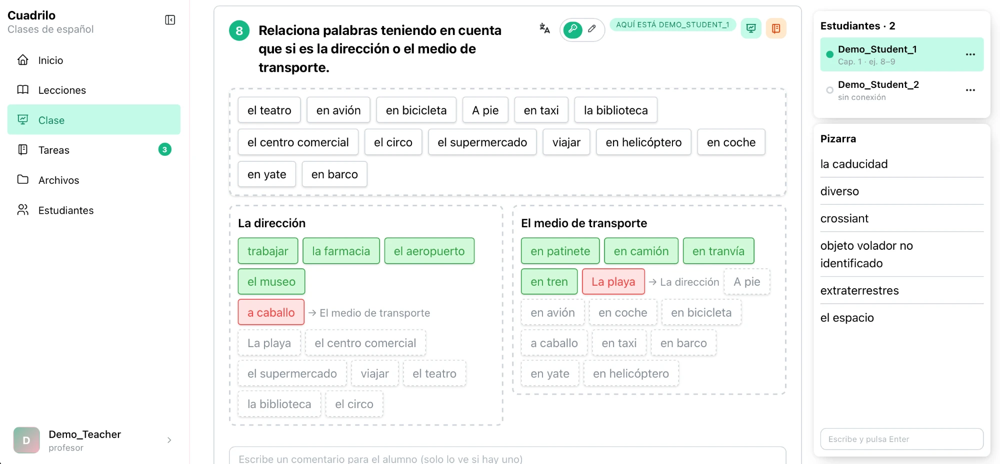
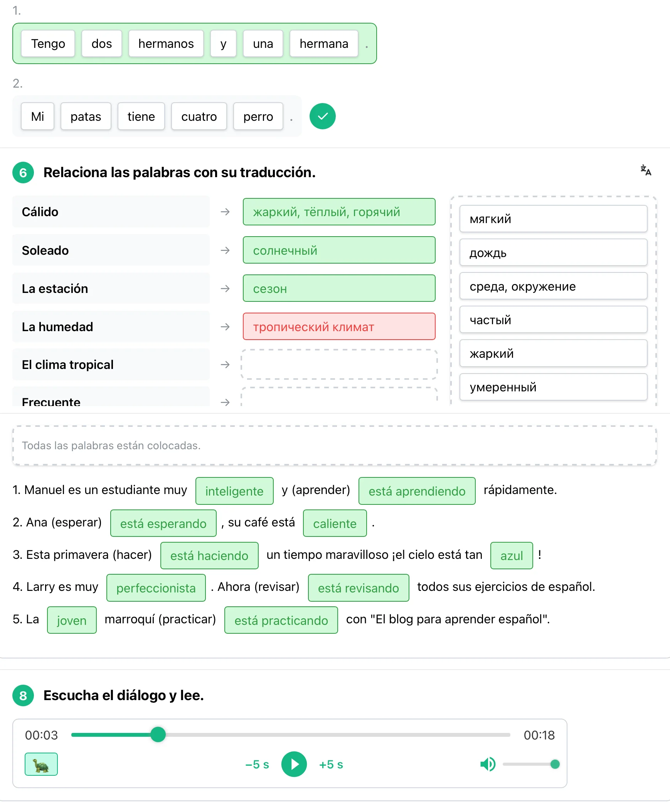

Free · open source · self-hosted
Lessons your students can do, not only read.
Build a lesson from blocks, teach it live, give homework and watch the answers arrive. Free for teachers and students, no plans and no pricing. It runs on your own server.
Free · no account · no server. The teacher and a student side by side on your own computer: play a live class alone. Other systems

Try the demo
The whole platform on your computer, in a minute
One window: the teacher on the left, a student on the right. Start a class, answer as the student and watch the answers arrive on the teacher's side. Nothing to set up, nothing leaves your computer.
Rather not install it on Windows? The portable version runs as it is. Not sure which Mac you have? Apple menu → About This Mac: “Chip Apple M…” is Apple silicon. All versions: releases on GitHub.
First start on a Mac
The app is free and not signed by Apple, so macOS asks once. Open it, then go to System Settings → Privacy & Security and click Open Anyway.
First start on Windows
Windows SmartScreen may warn about an unknown app. Click More info → Run anyway. It installs for you only, without an administrator.
Why it exists
Free, fast and yours
Learning languages should be open to everyone, and the basic tools of a teacher should not need a subscription. So Cuadrilo is free: no plans, no tiers, no paid features.
Fast and light
Lessons open and answers arrive at once. Few dependencies, nothing to wait for.
Made for the live lesson
Show a chapter, spin a wheel of questions, write on a shared board, set homework.
Yours, not rented
No ads, no analytics, no personal data: a login and a password per student. Everything is one folder you can copy.
What you get
Everything a small class needs
A visual lesson editor
Chapters, exercises, a student preview, access per lesson and per student.
Live classes, one-to-one or in groups
Answers in real time, a wheel for speaking practice, a shared board. Teach a whole group or a single student.
Homework and feedback
Any exercise becomes homework in one click. Comments under any answer.
A translator in every lesson
Click a word, see translations from an offline dictionary, save it to a vocabulary.
Your brand
Your name, icon and colours. Interface in Spanish or English.
AI assistants built in
Claude or ChatGPT create and edit lessons through an MCP server.
The building blocks
21 kinds of blocks

textMarkdown text, tables and coloured words
imageA picture with a caption and a size
compareTwo pictures with a before/after slider
audioAn audio file, with a slow mode
videoA YouTube video with a start time
geniallyAn embedded Genially
wheelA wheel of fortune for speaking practice
essayA free written answer
gapsType the missing words
dropdown-gapsPick the missing words from lists
drag-gapsDrag words from a bank into the gaps
build-wordBuild words from shuffled letters
matchJoin pairs
sortDrag words into groups
orderPut the words of a sentence in order
sequencePut sentences or dialogue lines in order
choiceA test with one or several right options
true-falseMark statements true or false
dictationListen to a sentence and type it
wordsearchFind the words in a letter grid
hotspotsClick the right zones on a picture
Try it
This is how a student feels it
Every answer is checked at once: right turns green, wrong turns red.
dropdown-gaps Pick the right word in each gap
Mi hermano tiene coche y moto.
My brother has a car and a motorbike.
choice Pick one answer
En España en verano hace…
AI assistants
Let the assistant do the typing
Claude or ChatGPT can turn a worksheet or an idea into a finished lesson through the built-in MCP server. You check it.
It sees your lessons and media only, never your students or their answers.
To connect: copy the address from Asistentes IA and add it as a custom connector in Claude or ChatGPT. Step by step.
- a text block with the rule and a table,
- a gaps exercise,
- a match exercise,
- a short choice test.
Get started
Run it on your computer, or on a small server
Free, MIT license. Needs Node.js 22.13+.
-
Try it on your computer
git clone https://github.com/Shestac92/cuadrilo.git cd cuadrilo npm install npm run dev npm run create-teacher -w server -- teacherThen open
http://localhost:5173and sign in as the teacher. -
Put it on your own server
A step-by-step guide for a VPS: domain, HTTPS, backups, updates. No sysadmin skills needed.
-
Read, change, contribute
Documentation for every part; contributions welcome.
Help wanted
Where you can help most
Cuadrilo is built by one person. These are the places where help matters most.
Mobile browsers
Adapt the interface to phones and tablets and test it in iOS Safari and Android Chrome.
License-free dictionaries
Offline dictionaries for more language pairs under permissive or public-domain licenses.
Privacy and the law
Review the privacy documents and what teachers need to meet data-protection rules in the EU, the UK, the US and elsewhere.
Testing
Try Cuadrilo on different platforms and browsers and report the bugs you find.
A demo server
A small VPS and a domain for a public demo. It needs few resources but costs money: a sponsor or a host would help.
Want to help? Open an issue or write to cuadrilo@duck.com.
Kudos
Thank you
Cuadrilo would not be what it is without the people who tried it, broke it and told me how to make it better.
A Spanish teacher and the students
For using the first versions in real lessons, for testing every new block and for ideas that became features.
Friends
For testing on their own phones and computers, finding bugs I did not see and not being polite about them.
Colleagues
For advice and good ideas, and for the questions that made the project simpler.
Support
Free, and it stays free
If Cuadrilo helps you, a coffee helps its development.